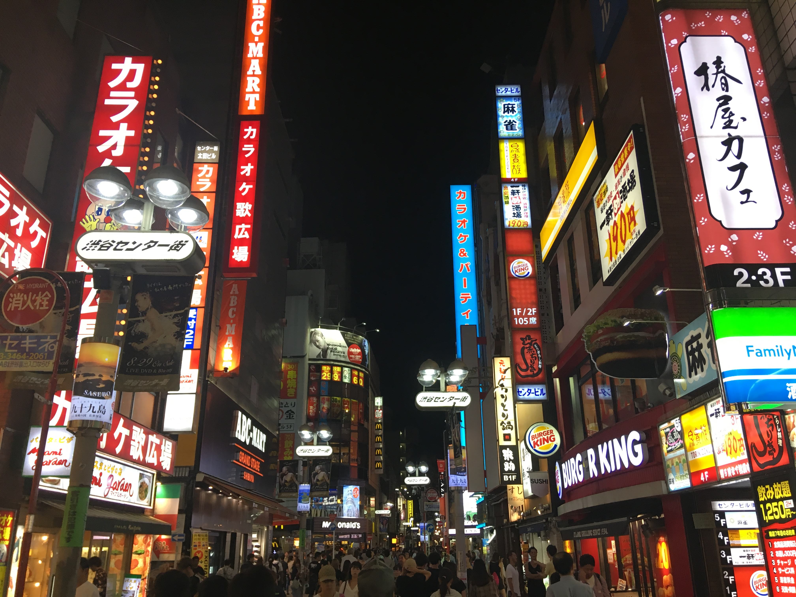
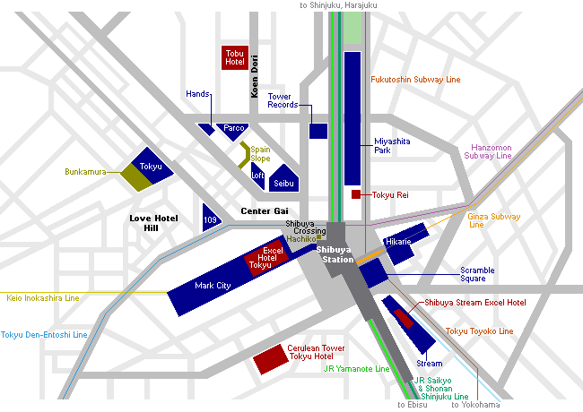

Looking for a fun and lively destination ?
Shibuya is here to make your dreams come true !
It is one of the 23 city wards of Tokyo, but often refers to just the popular shopping and entertainment area
found around Shibuya Station.
In this regard, Shibuya is one of Tokyo's most colorful and busy districts, packed with
shopping, dining and nightclubs serving swarms
of visitors that come to the district everyday.
Shibuya is a center for youth fashion and
culture, and its streets are the birthplace to many of Japan's fashion and
entertainment trends.
Numerous department stores and shopping malls can be found around the area catering to all types
of shoppers.
Many of the area's large shopping complexes belong to either Tokyu or Seibu, two competing corporations.

Shibuya's most prominent landmark is the busy intersection in front of the station's Hachiko Exit.
The intersection is heavily decorated by neon
advertisements and giant video screens and gets flooded by
pedestrians each time the lights turn green, making it a very popular photo spot.
Shibuya Station and surroundings are currently undergoing
major redevelopment, lasting almost two decades.
Several new buildings have opened over recent years, including Shibuya Hikarie (in 2012), Shibuya Stream (2018),
Shibuya Scramble
Square (2019) and Miyashita Park (2020), and more will be opening until works are completed
around 2028.
In addition, the flow of pedestrian traffic around the station is gradually being improved.

Famous streets and districts
Tokyu-affiliated attractions
Seibu-affiliated attractions
Others
Getting there and around
Shibuya Station is one of Tokyo's busiest stations.
It is served by the JR Yamanote Line, JR Saikyo Line, JR Shonan
Shinjuku Line,Hanzomon Subway Line ,
Ginza Subway Line,
Fukutoshin Subway Line,Tokyu Toyoko Line ,Tokyu Den-Entoshi Line
and Keio Inokashira Line.
It is also served by many Narita Express trains.
Orientation in Tokyo.
Hotels
TRUNK HOTEL
LuxuryLocated a 11-minute walk from JR Shibuya Station, Trunk (Hotel) offers fre…
Cerulean Tower
Tokyu Hotel
LuxuryCentrally located in Shibuya, Cerulean Tower Tokyu...
The Millennials
Shibuya
Budget-friendlySituated in Tokyo, 400 metres from Hachiko Statue…
Shibuya Stream
Excel Hotel
Luxury Conveniently set in the centre of Tokyo, Shibuya Stream…
All day place
shibuya
LuxuryConveniently situated in Tokyo, the hotel provides…